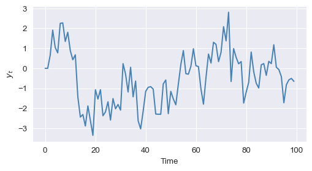

import numpy as np
import matplotlib.pyplot as plt
import seaborn as sns3 Control Structures
3.1 Introduction
In this chapter, we introduce commonly used control structures in Python. In a control structure, indentation (four spaces) is important as it determines the start and end of the structure. We cover the following structures:
- Conditional statements:
if...elif...else - Loops:
forandwhile - Comprehensions:
List,tuple,dictionary, andsetcomprehension - Control statements:
breakandcontinue - Exception handling:
try...except
\[ \DeclareMathOperator{\cov}{cov} \DeclareMathOperator{\corr}{corr} \DeclareMathOperator{\var}{var} \DeclareMathOperator{\SE}{SE} \DeclareMathOperator{\E}{E} \DeclareMathOperator{\A}{\boldsymbol{A}} \DeclareMathOperator{\x}{\boldsymbol{x}} \DeclareMathOperator{\sgn}{sgn} \DeclareMathOperator{\argmin}{argmin} \newcommand{\tr}{\text{tr}} \newcommand{\bs}{\boldsymbol} \newcommand{\mb}{\mathbb} \]
3.2 Conditional statements
The structure of if...elif...else is as follows:
if logical_1:
Code to run if logical_1
elif logical_2:
Code to run if logical_2 and not logical_1
elif logical_3:
Code to run if logical_3 and not logical_1 or logical_2
...
...
else:
Code to run if all previous logicals are falseThis structure allows us to execute the block of the code based on the conditions specified by the logical statements (logical_1, logical_2, and so on). If none of the logical statements are true, then the structure executes the code following the else statement. Consider the following interaction with Python:
y = 5
if y < 5:
y += 1 # equivalent to y=y+1
else:
y -= 1 # equivalent to y=y-1
y4In the above example, since y is not less than 5, the code in the else block is executed, and y becomes 4. In the following example, the logical condition x>= 5 is true, so the code in the elif block is executed:
x = 5
if x < 5:
x = x + 1 # equivalent to x+=1
elif x >= 5:
x = x**2 - 1
else:
x = x * 2
x243.3 Loops
The syntax for the for loop is as follows:
for item in iterable:
Code to runHere, item is called the loop index. It takes on each successive value in the iterable, and the code in the body is executed once for each value. An iterable can be any object that is iterable in Python. Common examples include range, np.arange, list, tuple, array, and matrix.
In the following example, we use a for loop to sum the first 100 integers:
count = 0
for i in range(101):
count += i # equivalent to count += i
count
np.sum(range(101)) # check the loop with np.sum(range(101))50505050In the above example, count is initialized to 0, and then we iterate through the integers from 0 to 100 (inclusive) using range(101). In each iteration, we add the current integer i to count. After the loop, count contains the sum of the first 100 integers. The result can also be verified using np.sum(range(101)).
count = 0
x = np.linspace(0, 500, 50)
for i in x:
count += i # Equivalent to "count = count + i"
print(count)
print(np.sum(x))12499.999999999998
12499.999999999998Consider the following AR(2) model: \(y_t=\phi_1y_{t-1}+\phi_2y_{t-2}+\epsilon_t\) for \(t=1,\dots,T\), where \(\phi_1 = 0.6\), \(\phi_2 = 0.2\), and \(\epsilon_t\sim N(0,1)\). In the following example, we use a for loop to simulate the sample path of this model. We first set the seed through np.random.seed(42) for reproducibility. We then set the parameters of the AR(2) model, initialize y, and generate the error term epsilon. Finally, we use a for loop to simulate the AR(2) process for \(t=2,\dots,T+1\):
# Set seed for reproducibility
np.random.seed(42)
# Parameters for AR(2) model
phi_1 = 0.6
phi_2 = 0.2
T = 100
# Initialize the time series
y = np.zeros(T)
epsilon = np.random.normal(0, 1, T)
# Simulate AR(2) process
for t in range(2, T):
y[t] = phi_1 * y[t - 1] + phi_2 * y[t - 2] + epsilon[t]In Figure 3.1, we provide the plot of the simulated \(y_t\).
# Plot of y
sns.set_style("darkgrid")
fig, ax = plt.subplots(figsize=[6, 3])
ax.plot(y, color="steelblue")
ax.set_xlabel("Time")
ax.set_ylabel(r"$y_t$")
plt.show()
A for loop can be nested inside another for loop, as illustrated in the following example:
count = 0
for i in range(10):
for j in range(10): # nested for loop
count = count + j
count450The while loop executes as long as a specified condition is true. The syntax for the while loop as follows:
while logical:
Code to run
Update logicalThis structure keeps executing the block of code as long as the logical condition remains true. Therefore, it is important to update the logical condition within the loop to eventually break out of it; otherwise, the loop will run indefinitely.
In the following example, we use a while loop to sum the first 9 integers. Note that we initialize count to 0 and i to 1. The loop continues as long as i is less than 10, and in each iteration, we add i to count and increment i by 1:
count = 0
i = 1
while i < 10:
count = count + i
i += 1 # equivalent to i=i+1
count45In the following example, we use a while loop to simulate the AR(2) model described above. We set the seed for reproducibility, initialize the parameters, and generate the error term epsilon. The loop runs from t=2 to T-1, updating y[t] based on the AR(2) equation. Also, we update t in each iteration to ensure the loop eventually terminates:
# Set seed for reproducibility
np.random.seed(42)
# Parameters for AR(2) model
phi_1 = 0.6
phi_2 = 0.2
T = 100
# Initialize the time series
y = np.zeros(T)
epsilon = np.random.normal(0, 1, T)
# Simulate AR(2) process
t = 2
while t < T:
y[t] = phi_1 * y[t - 1] + phi_2 * y[t - 2] + epsilon[t]
t += 1 # Update logical conditionThe simulated sample path of the AR(2) model is shown in Figure 3.2. Note that the sample path is the same as the one generated using the for loop in Figure 3.1.
# Plot of y
sns.set_style("darkgrid")
fig, ax = plt.subplots(figsize=[6, 3])
ax.plot(y, color="steelblue")
ax.set_xlabel("Time")
ax.set_ylabel(r"$y_t$")
plt.show()
3.4 Comprehensions
Comprehensions allow us to use a loop within structures such as lists, sets, tuples, and dictionaries. They provide a concise way to perform iterations.
3.4.1 List comprehensions
The syntax for the list comprehension is as follows:
output=[expression for item in iterable if (item satisfies this condition)]Here, expression is the value to be included in the list, item is the loop index, and iterable is any iterable object. The if condition is optional and can be used to filter items based on a specific condition.
In the following example, we use a for loop to compute the exponential of each element in an array x:
# Using a for loop
x = np.arange(3.0)
y = []
for i in range(len(x)):
y.append(np.exp(x[i]))
y[1.0, 2.718281828459045, 7.38905609893065]Instead of using a for loop, we can achieve the same result using a list comprehension as follows:
# Using a list comprehension
z = [np.exp(x[i]) for i in range(len(x))]
z[1.0, 2.718281828459045, 7.38905609893065]In the following example, we use a for loop to compute the square of every second element in an array x and store the results in a list y. Instead of using a for loop, we can use a list comprehension to achieve the same result as shown in the following code chunk.
# Using a for loop
x = np.arange(5.0)
y = []
for i in range(len(x)):
if np.floor(i / 2) == i / 2:
y.append(x[i] ** 2)
y[0.0, 4.0, 16.0]# Using a list comprehension
z = [x[i] ** 2 for i in range(len(x)) if np.floor(i / 2) == i / 2]
z[0.0, 4.0, 16.0]3.4.2 Set comprehensions
Set comprehensions are like list comprehension but use {} instead of []. Consider the following for loop example, which computes the square of each element in an array x and stores the results in a set z:
# Using a for loop
x = np.arange(-5.0, 5.0)
z = set()
for i in range(len(x)):
z.add(x[i] ** 2)
z{0.0, 1.0, 4.0, 9.0, 16.0, 25.0}Instead of using a for loop, we can use a set comprehension to achieve the same result. A set comprehension is similar to a list comprehension but uses {} to create a set:
# Using a set comprehension
z_set = {x[i] ** 2.0 for i in range(len(x))}
z_set{0.0, 1.0, 4.0, 9.0, 16.0, 25.0}In the following example, we have an if conditional nested inside a for loop:
input_list = [1, 2, 3, 4, 4, 5, 6, 6, 6, 7, 7]
set_comp = {np.exp(var) for var in input_list if var % 2 == 0}
set_comp{7.38905609893065, 54.598150033144236, 403.4287934927351}3.4.3 Dictionary comprehensions
Dictionary comprehensions also use {}. The syntax of a dictionary comprehension is as follows:
output = {key:value for (key, value) in iterable if (key, value satisfy this condition)}In the following example, we use a for loop to create a dictionary y where the keys are odd numbers from 1 to 7, and the values are the cubes of those keys:
x = [1, 2, 3, 4, 5, 6, 7]
y = {var: var**3 for var in x if var % 2 != 0}
y{1: 1, 3: 27, 5: 125, 7: 343}In the following example, we use a for loop to create a dictionary x where the keys are the indices of an array y, and the values are the exponential of those indices:
# Using a for loop
y = np.arange(-5.0, 5.0)
x = {}
for i in range(len(y)):
z = {i: np.exp(i)}
x.update(z)
print(x)
# Using a dictionary comprehension
z_dict = {i: np.exp(i) for i in range(len(y))}
print(z_dict){0: 1.0, 1: 2.718281828459045, 2: 7.38905609893065, 3: 20.085536923187668, 4: 54.598150033144236, 5: 148.4131591025766, 6: 403.4287934927351, 7: 1096.6331584284585, 8: 2980.9579870417283, 9: 8103.083927575384}
{0: 1.0, 1: 2.718281828459045, 2: 7.38905609893065, 3: 20.085536923187668, 4: 54.598150033144236, 5: 148.4131591025766, 6: 403.4287934927351, 7: 1096.6331584284585, 8: 2980.9579870417283, 9: 8103.083927575384}3.4.4 Tuple comprehension
Tuple comprehensions use tuple() with the following syntax:
output = tuple(expression for item in iterable if (item satisfies this condition))In the following example, we use a for loop to compute the cube of each element in an array x and store the results in a list z. We then use a tuple comprehension to achieve the same result:
# Using a for loop
x = np.arange(-5.0, 5.0)
z = []
for i in x:
z.append(i**3)
z[-125.0, -64.0, -27.0, -8.0, -1.0, 0.0, 1.0, 8.0, 27.0, 64.0]# Using a tuple comprehension
z_tuple = tuple(i**3 for i in x)
z_tuple(-125.0, -64.0, -27.0, -8.0, -1.0, 0.0, 1.0, 8.0, 27.0, 64.0)3.5 Control statements: break and continue
These statements can be used inside control structures for terminating or skipping certain iterations. The break statement is used when we want to end the loop if a condition is satisfied. If we want to skip specific iterations, we can use the continue statement.
In the following example, we use a for loop to print numbers from 0 to 9. However, the loop ends when i equals 3 due to the break statement; as a result, it only prints the numbers 0, 1, and 2.
for i in range(10):
if i == 3:
break # Loop ends when i equals 3
print(i)0
1
2In the following example, we use a for loop to print numbers from 0 to 5. However, the continue statement skips the even numbers, so only the odd numbers (1, 3, and 5) are printed:
for i in range(6):
if i % 2 == 0:
continue # Skips even numbers
print(i)1
3
53.6 Exception handling
The try...except structure can be used to handle errors and exceptions. For more information, see the Errors and Exceptions section in the documentation.
In the following example, we attempt to divide a number by zero, which raises a ZeroDivisionError. The except block catches this error and prints a message:
x = 10
try:
result = x / 0
except ZeroDivisionError:
print("You can't divide by zero!")You can't divide by zero!